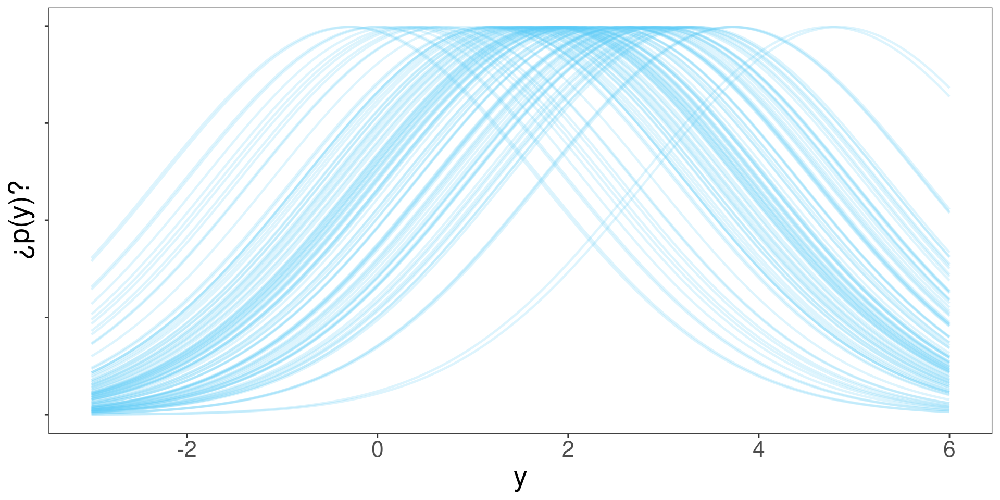
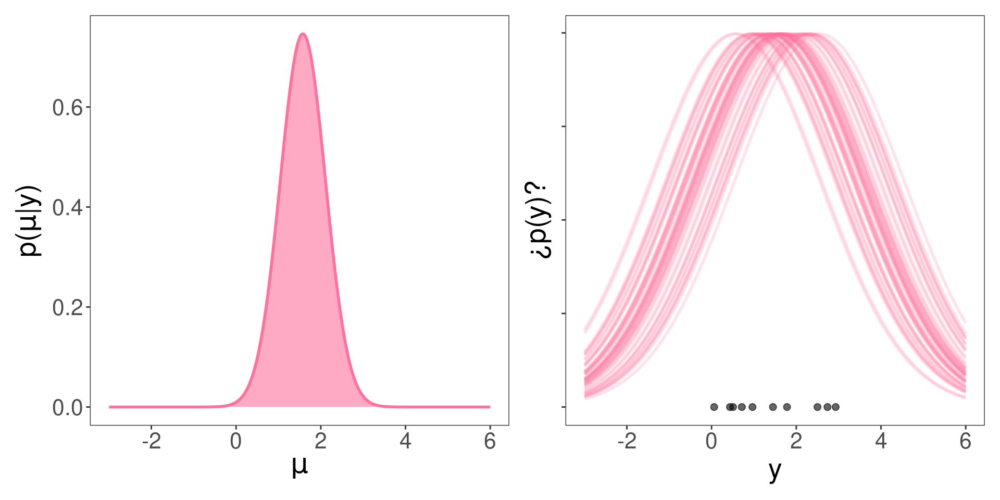
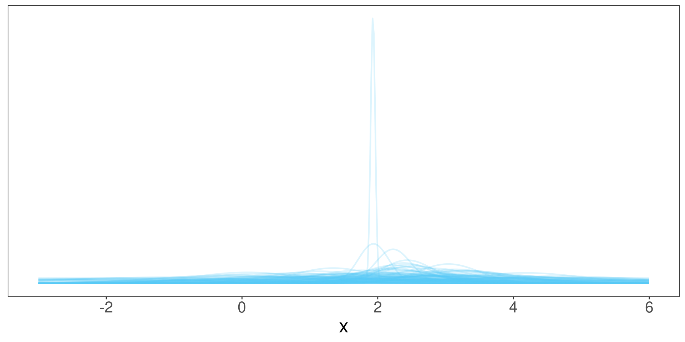
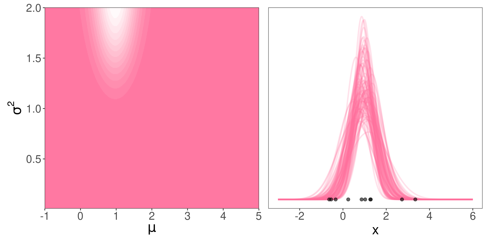
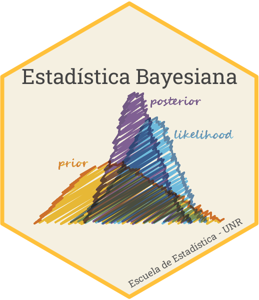

Sea una muestra \(\mathbf{y} = (y_1,y_2,\dots,y_n)\) obtenida de un modelo Poisson, es decir:
\[Y_i \sim \mathrm{Poisson}(\lambda)\]
Interesa realizar una inferencia sobre el valor de \(\lambda\)
¿Cómo asignamos una credibilidad a priori para \(\lambda\)?
\[ \lambda \sim \mathrm{Gamma}(s, r) \]
\[ p(\lambda \mid s, r) = p(\lambda) = \frac{r^s}{\Gamma(s)} \lambda^{s-1}e^{-r\lambda} \]
Cuidado
\(\mathrm{Gamma}(s, r)\) en R es dgamma(x, shape = s, scale = 1/r)
El modelo propuesto es \[ \begin{aligned} Y_i \mid \lambda & \sim Po(\lambda)\\ \lambda & \sim \mathrm{Gamma}(s, r) \end{aligned} \]
El likelihood es Poisson: \[p(y_i\mid \lambda) = \frac{\lambda^{y_i}e^{-\lambda}}{y_i!} \rightarrow p(\mathbf{y}\mid \lambda) = \prod_i \frac{\lambda^{y_i}e^{-\lambda}}{y_i!} = \frac{\lambda^{\sum_i y_i}e^{-n\lambda}}{\prod_{i}y_i!}\]
El prior es Gamma: \[p(\lambda) = \frac{r^s}{\Gamma(s)} \lambda^{s-1}e^{-r\lambda}\]
Interesa hallar \(p(\lambda\mid \mathbf{y})\)
\[p(\lambda\mid \mathbf{y}) \propto p(\mathbf{y}\mid\lambda) p(\lambda)\]
\[ p(\lambda \mid \mathbf{y}) \propto \frac{\lambda^{\sum_i y_i}e^{-n\lambda}}{\prod_{i}y_i!} \frac{r^s}{\Gamma(s)} \lambda^{s-1}e^{-r\lambda} \]
\[ p(\lambda \mid \mathbf{y}) \propto \frac{r^s}{\Gamma(s)\prod_i y_i!} \lambda^{\sum_iy_i+s-1} e^{-n\lambda - r \lambda} \]
\[p(\lambda \mid \mathbf{y}) = K C \lambda^{\sum_iy_i+s-1} e^{-n\lambda - r \lambda}\]
\[p(\lambda \mid \mathbf{y}) = K^* \lambda^{\sum_iy_i+s-1} e^{-(n + r)\lambda}\]
Para que \(\int_0^\infty p(\lambda\mid \mathbf{y})d \lambda = 1\), debe ser
\[K^* = \frac{(n + r )^{\sum_i y_i + s}}{\Gamma(\sum_i y_i + s)}\]
Por lo tanto, resulta que la distribución a posteriori es Gamma de parámetros \(\sum_i y_i + s\) y \(n+r\)
\[ p(\lambda\mid \mathbf{y}) = \frac{(n + r )^{\sum_i y_i + s}}{\Gamma(\sum_i y_i + s)} \lambda^{\sum_iy_i+s-1} e^{-(n + r)\lambda} \]
\[ \lambda\mid \mathbf{y} \sim \mathrm{Gamma}(\sum_i y_i + s, n+r) \]
Sea una muestra \(\mathbf{y} = (y_1,y_2,\dots,y_n)\) obtenida de un modelo normal con varianza conocida \(\sigma^2\), es decir:
\[Y_i \sim \mathcal{N}(\mu,\sigma^2)\]
Interesa realizar una inferencia sobre el valor de \(\mu\)
¿Cómo asignamos una credibilidad a priori para \(\mu\)?
El modelo propuesto es: \[ \small{ \begin{aligned} y_i \mid \mu & \sim \mathcal{N}(\mu,\sigma^2)\\ \mu & \sim \mathcal{N}(\theta,\tau^2) \end{aligned} } \]
El likelihood es normal: \[ \small{ \begin{aligned} p(y_i\mid \mu) &= \frac{1}{\sqrt{2\pi\sigma}} e^{-\frac{(y_i-\mu)^2}{2\sigma^2}} \rightarrow \\ p(\mathbf{y}\mid \mu) &= \left(\frac{1}{2\pi\sigma}\right)^{n/2} e^{-\frac{\sum_i(y_i-\mu)^2}{2\sigma^2}} \propto e^{-\frac{(\bar{y}-\mu)^2}{2\sigma^2/n}} \end{aligned} } \]
El prior es normal: \[ \small{ p(\mu) = \frac{1}{\sqrt{2\pi\tau}} e^{-\frac{(\mu-\theta)^2}{2\tau^2}} } \]
Interesa hallar \(p(\mu \mid \mathbf{y})\)
\[p(\mu\mid \mathbf{y}) \propto p(\mathbf{y}\mid\mu) p(\mu)\] \[p(\mu \mid \mathbf{y}) \propto e^{-\frac{(\bar{y}-\mu)^2}{2\sigma^2/n}} \frac{1}{\sqrt{2\pi\tau}} e^{-\frac{(\mu-\theta)^2}{2\tau^2}}\]
\[ \begin{aligned} p(\mu \mid \mathbf{y}) & \propto e^{-\frac{(\bar{y}-\mu)^2}{2\sigma^2/n}} e^{-\frac{(\mu-\theta)^2}{2\tau^2}} \\ & \propto e^{-\left[\frac{(\bar{y}-\mu)^2}{2\sigma^2/n}+\frac{(\mu-\theta)^2}{2\tau^2}\right]} \\ & \propto e^{-\left[ \frac{\bar{y}^2 - 2\bar{y} \mu + \mu^2}{2\sigma^2/n} + \frac{\mu^2 - 2\mu\theta^2 + \theta^2}{2\tau^2} \right]} \\ & \propto e^{\left[ \frac{ 2\bar{y} \mu - \mu^2}{2\sigma^2/n} + \frac{-\mu^2 + 2\mu\theta^2}{2\tau^2} \right]} \\ & \propto e^{\left[ \frac{(2\bar{y} \mu - \mu^2)n\tau^2 + (-\mu^2 + 2\mu\theta^2)\sigma^2}{2\sigma^2\tau^2} \right]} \end{aligned} \]
\[ \begin{aligned} P(\mu \mid \mathbf{y}) & \propto e^{\frac{2\mu(\theta\sigma^2+ \bar{y}n\tau^2)-\mu^2(n\tau^2+\sigma^2)}{2\tau^2\sigma^2}} \\ & \propto e^{\frac{-\mu^2 + 2\mu \left( \frac{\theta\sigma^2 + \bar{y}n\tau^2}{n\tau^2 + \sigma^2} \right)}{2\tau^2\sigma^2/(n\tau^2 + \sigma^2)}} e^{-\left(\frac{\theta\sigma^2 + \bar{y}n\tau^2}{n\tau^2 + \sigma^2}\right)^2} \\ & \propto e^{-\frac{\left(\mu - \frac{\theta\sigma^2 + \bar{y}n\tau^2}{n\tau^2 + \sigma^2} \right)^2}{2\tau^2\sigma^2/(n\tau^2+\sigma^2)}} \end{aligned} \] \[p(\mu\mid\mathbf{y}) = K^* e^{-\frac{\left(\mu - \frac{\theta\sigma^2 + \bar{y}n\tau^2}{n\tau^2 + \sigma^2} \right)^2}{2\tau^2\sigma^2/(n\tau^2+\sigma^2)}}\]
Por lo tanto, resulta que la distribución a posteriori es normal de parámetros \(\theta_n\) y \(\tau_n^2\)
\[ \begin{aligned} \mu\mid \mathbf{y} & \sim \mathcal{N}\left( \frac{\theta\sigma^2 + \bar{y}n\tau^2}{n\tau^2 + \sigma^2},\frac{\tau^2\sigma^2}{n\tau^2+\sigma^2} \right) \\ & \sim \mathcal{N}\left( \theta_n,\tau_n^2 \right) \end{aligned} \]
Reflexionemos… \[ \begin{aligned} y_i\mid\mu & \sim \mathcal{N}(\mu,\sigma^2) \\ \mu & \sim \mathcal{N}(\theta,\tau^2) \\ \mu \mid \mathbf{y} & \sim \mathcal{N}(\theta_n,\tau_n^2) \end{aligned} \]
¿Parámetros desconocidos en la verosimilitud?
¿Dimensión y característica del espacio de parámetros?
¿Constantes de ajuste del prior?
¿Forma del posterior?
¿Qué son \(\theta_n\) y \(\tau_n^2\)?
¿Parámetros de la verosimilitud?
Otro modo de verlo
¿Puedo representar los datos en el gráfico de la izquierda?
No, es el mundo de los parámetros
¿Qué representan los valores marcados con \(\mathbf{\times}\)?
Posibles valores de \(\mu\) que podrían esperarse a priori.
¿Media y varianza de la normal de la izquierda?
\(\theta\) y \(\tau^2\)
¿Media y varianza de las normales de la derecha?
\(\mu\) y \(\sigma^2\)
¿Qué estamos viendo?
A posteriori (luego de observar los datos)… ¿qué ocurre con la plausibilidad de los valores de \(\mu\)?
¿Media y varianza de la normal de la izquierda?
\(\theta_n\) y \(\tau_n^2\)
¿Media y varianza de las normales de la derecha?
\(\mu\) y \(\sigma^2\)
\[ \small{ \mathbb{E}[p(\mu\mid \mathbf{y})] = \theta_n = \frac{\theta\sigma^2 + \bar{y}n\tau^2}{n\tau^2 + \sigma^2} } \]
\[ \small{ \mathbb{E}[p(\mu\mid \mathbf{y})] = \theta\frac{\sigma^2}{n\tau^2 + \sigma^2} + \bar{y}\frac{n\tau^2}{n\tau^2 + \sigma^2} } \]
Representa un balance (promedio ponderado o combinación convexa) entre la media muestral y la media esperada a priori.
\[ \small{ \mathbb{V}[p(\mu\mid \mathbf{y})] = \tau_n^2 = \frac{\tau^2\sigma^2}{n\tau^2+\sigma^2} } \]
\[ \small{ \mathbb{V}[p(\mu\mid \mathbf{y})] = \frac{1}{\frac{n}{\sigma^2}+\frac{1}{\tau^2}} } \]
\[ \small{ \frac{1}{\mathbb{V}[p(\mu\mid \mathbf{y})]} = \frac{n}{\sigma^2} + \frac{1}{\tau^2} } \]
La precisión a posteriori es la suma de las precisiones del prior y la muestra.
\[p(\tilde{y}\mid \mathbf{y}) = \int p(\tilde{y}\mid \mu) p(\mu\mid \mathbf{y})d\mu\] El integrando es el producto de dos normales: una normal bivariada. Por lo tanto toda la integral es una distribución marginal de una normal: otra normal.
Demostración poco formal…
A posteriori vale \[ \begin{array}{ccc} y & = & (y-\mu) + \mu \\ y-\mu \mid \mu & \sim & \mathcal{N}(0,\sigma^2) \\ \mu \mid \mathbf{y} & \sim & \mathcal{N}(\theta_n,\tau_n^2) \end{array} \]
Resulta
\[p(\tilde{y}\mid \mathbf{y}) = \mathcal{N}(\mu_n,\sigma^2 + \tau_n^2)\]
La varianza predictiva \(\sigma^2 + \tau_n^2\) es una medida de la incertidumbre a posteriori respecto a una observación nueva \(\tilde{y}\).
La incertidumbre en \(\tilde{y}\) proviene de la variabilidad debida al azar (\(\sigma\)) y de la variabilidad debida al desconocimiento de \(\mu\) (\(\tau_n\))
En otras palabras, si supiéramos que \(\mu = 2\), toda la variabilidad provendría de \(\sigma\), ¡pero no sabemos cuánto vale \(\mu\)! Puede ser \(2\) o \(1.98\) o \(1.43\)… Por lo que hay una componente adicional de varianza.
No se entendió nada. Simular para creer.
¿Cómo obtenemos una observación nueva si sabemos que \(\mu = 2\) (sabiendo que \(\sigma = 1.2\))?
Directamente tomamos una muestra \(\tilde{y}\) de \(\mathcal{N}\left(\mu=2,\sigma^2= 1.2^2\right)\)
Pero en estadística bayesiana \(\mu\) tiene una distribución de probabilidad (por ejemplo \(\mathcal{N}\left(\theta_n=2,\tau_n^2=1.8^2\right)\)), ¿cómo hacemos la simulación?
¿Qué va a pasar en cada caso si construimos la distribución de \(\tilde{y}\)?
La distribución predictiva contiene la variabilidad inherente al fenómeno en estudio (\(\sigma\)) y la incertidumbre en el parámetro \(\mu\).
Sea una muestra \(\mathbf{y} = (y_1,y_2,\dots,y_n)\) obtenida de un modelo normal con varianza desconocida \(\sigma^2\), es decir:
\[Y_i \sim \mathcal{N}(\mu,\sigma^2)\]
E interesa realizar una inferencia sobre el valor de \(\mu\) y el valor de \(\sigma\)
¿Cómo asignamos una credibilidad a priori para \(\mu\) y \(\sigma\)? ¡Con una distribución en dos dimensiones!
El modelo es
\[ \begin{aligned} Y_i\mid\mu,\sigma^2 & \sim \mathcal{N}(\mu,\sigma^2) \\ \mu,\sigma^2 & \sim \mathcal{N}GI(\theta,\tau,\alpha,\beta) \end{aligned} \]
\(\mu\) y \(\sigma^2\) tienen distribución conjunta normal-gamma-inversa:
\[ p(\mu,\sigma^2 \mid \theta, \tau, \alpha, \beta ) = \frac{\sqrt{\tau}}{\sqrt{2\pi\sigma^2}} \frac{\beta^\alpha}{\Gamma(\alpha)} \left( \frac{1}{\sigma^2} \right)^{\alpha+1} e^{-\frac{2\beta + \tau(\mu-\theta)^2}{2\sigma^2}} \]
Si anticipamos que la normal-gamma-inversa es conjugada de la normal (para los parámetros \(\mu\) y \(\sigma^2\)), ¿qué podemos decir de la distribución a posteriori (conjunta) de \(\mu\) y \(\sigma^2\)
Efectivamente, se puede probar que:
\[ \begin{aligned} \mu,\sigma^2 \mid \mathbf{y} & \sim \mathcal{N}GI(\theta_n,\tau_n,\alpha_n,\beta_n) \end{aligned} \] con
\[ \begin{cases} \theta_n = \frac{\tau\theta + n \bar{y}}{\tau+n}\\ \tau_n = \tau + n\\ \alpha_n = \alpha + \frac{n}{2}\\ \beta_n = \beta + \frac{1}{2} \sum_i (y_i - \bar{y})^2 + \frac{n\tau}{\tau + n} \frac{(\bar{y}-\theta)^2}{2} \end{cases} \]
¿Parámetros desconocidos en la verosimilitud? ¿Dimensión del espacio de parámetros? ¿Constantes de ajuste del prior? ¿Forma del posterior?
Reflexionemos…
\[ \begin{aligned} Y_i \mid\mu & \sim \mathcal{N}(\mu,\sigma^2) \\ \mu & \sim \mathcal{N}(\theta,\tau^2) \\ \mu \mid \mathbf{y} & \sim \mathcal{N}(\theta_n,\tau_n^2) \end{aligned} \]
¿Parámetros desconocidos en la verosimilitud? ¿Dimensión y característica del espacio de parámetros? ¿Constantes de ajuste del prior? ¿Forma del posterior? ¿Qué son \(\theta_n\) y \(\tau_n^2\)?
¿Puedo representar los datos en el gráfico de la izquierda?
No, es el mundo de los parámetros
¿Qué representan los valores marcados con \(\mathbf{\times}\)?
Posibles valores de \(\mu\) y \(\sigma^2\) que podrían esperarse a priori.
¿Qué le da forma a la distribución de la izquierda?
\(\theta\), \(\tau\), \(\alpha\) y \(\beta\)
¿Media y varianza de las normales de la derecha?
\(\mu\) y \(\sigma^2\)
¿Qué estamos viendo?
A posteriori (luego de observar los datos)… ¿qué ocurre con la plausibilidad de los valores de \(\mu\) y \(\sigma^2\)?
¿Parámetros de la distribución de la izquierda?
\(\theta_n\), \(\tau_n\), \(\alpha_n\) y \(\beta_n\)
¿Media y varianza de las normales de la derecha?
\(\mu\) y \(\sigma^2\)

Estadística Bayesiana – 2025